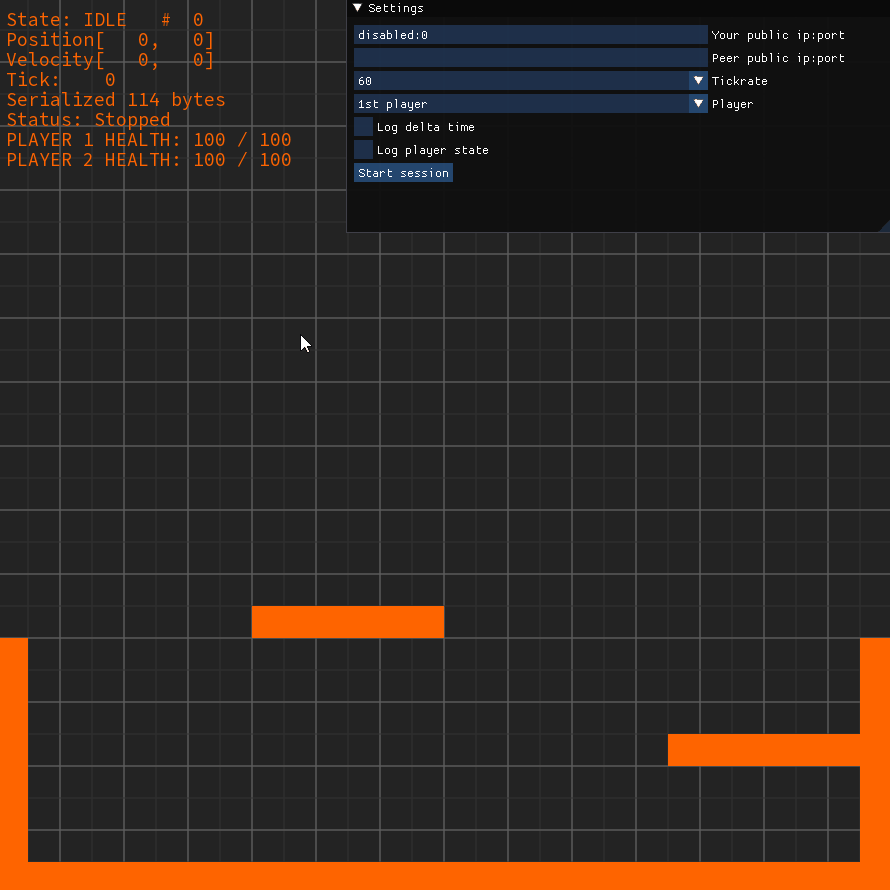

Привет!
Меня зовут Новиков Николай и я занимаюсь разработкой программного обеспечения более 9 лет.
Microservices Architecture: Java 7-11, Spring, JPA+Hibernate, Gradle/Maven, Docker, PostgreSQL, Redis, RabbitMQ
Gamedev: С++17, С++20, CMake, Protobuf, GGPO, Unreal Engine 5.
Мои проекты
Библиотека для сетевого платформера на с++
Библиотека создавалась как Proof of Concept использования Rollback Network для компенсации лага в action играх. Сетевая часть реализована c использованием GGPO. Для поддержки детерминированого состояния игры подключена библиотека с фиксированной точкой. Сериализация/Десериализация выполнена с помощью Protobuf. Для отладки добавлен упрощенный GUI на SFML+ImGui.
Пакетный менеджер - часть зависимостей загружается через vcpkg
Сборка - Cmake собирает библиотеку в трех вариантах:
- sync - урезанный функционал, только логика платформера без поддержки сети. Tickrate задается вызовом метода update, тем самым привязываясь к framerate
- async - тоже только логика платформера без сети, но tickrate фиксированный и задается перед стартом сессии. Метод update вызывается библиотекой в отдельном потоке.
- ggpo - полная версия с p2p подключением и обходом NAT
CI/CD - запуск unit тестов настроен через github
Исходники библиотеки